ENGINEERING BLOG / CHAPTER 09 OF 10
Retrieval, Tools and Agents
9.1 — Why Does a Trained LLM Need Any of This?
The closed-book exam problem
Picture a brilliant student who spent years reading every book, article, and website up to a certain date — and then was sealed inside a room with no windows, no phone, and no internet, forever. That student can reason brilliantly about anything they read, but if you ask them “who won the election last week?” they can only shrug, or worse, confidently make something up.
That sealed room is exactly the situation of a trained LLM. Everything the model “knows” is frozen into its weights at the end of pretraining. This frozen date is called the knowledge cutoff.
┌──────────────────────────────────────────────────────────────────────┐
│ PRETRAINING DATA │ THE REST OF TIME │
│ (model learned this) │ (model knows nothing) │
│ ─────────────────────────────────────────► │ ───────────────────► │
│ Knowledge │
│ cutoff date │
└──────────────────────────────────────────────────────────────────────┘As a concrete anchor: model cards for frontier LLMs always publish this date explicitly. For instance, OpenAI’s GPT-5 model card lists a knowledge cutoff of September 30, 2024 — ask it about anything after that date “as is,” and the base model has no reliable way to know the answer.
“Why not just keep training it?”
A completely reasonable question. There are four practical reasons the field doesn’t do this casually:
- Catastrophic forgetting risk. Continuing to train a model on new data can silently damage capabilities it already had — this is called regression. Nobody wants to accidentally make the model worse at coding to make it better at current events.
- It doesn’t scale across use cases. If you’ve fine-tuned five different specialized models from the same base, you’d need to re-inject knowledge into all five, every time the world changes. That’s an operational nightmare.
- Context windows, even huge ones, are finite. We’ll see in a moment that “just put everything in the prompt” doesn’t actually work, even when the context window is enormous.
- It costs money and the model gets confused — details below.
So the field converged on a much simpler idea: don’t touch the weights. Just hand the model the right piece of information at the right time, inside the prompt. This single idea is the seed from which RAG, tool calling, and agents all grow.
Why not just stuff everything into the context window?
Suppose you decided to sidestep the whole problem: context windows on frontier models are enormous now (GPT-5, for example, ships with a 400,000-token context window). Why not just paste every document you might need directly into the prompt?
Reason 1 — tokens are not free, and “unlimited” isn’t actually unlimited. A useful mental conversion: 1 token ≈ 4 characters in English text. So 400,000 tokens is roughly 1.6 million characters — call it “a very thick book,” not “the entire internet.” If your knowledge base is genuinely large (a company’s entire documentation, or the news of the last month), it will not fit.
Reason 2 — the needle-in-a-haystack problem. Even if it did fit, researchers ran a now-famous stress test: bury a single fact (the “needle”) somewhere inside a very long prompt (the “haystack”) and ask the model to retrieve it. The results, visualized as a heatmap of (prompt length × position of the fact), showed something uncomfortable: as prompts get longer, models get measurably worse at finding facts placed in the first half of the prompt. Feeding the model a huge pile of information — most of it irrelevant to the current question — doesn’t just cost tokens, it actively degrades the quality of the answer, because the model’s attention gets spread thin and distracted by irrelevant content.
Document depth (where the fact is hidden)
0% 100%
┌─────────────────────────────────────────────────────┐
short │ ✓ ✓ ✓ ✓ ✓ ✓ ✓ ✓ ✓ ✓ ✓ ✓ ✓ ✓ ✓ ✓ ✓ ✓ │
Prompt │ ✓ ✓ ✓ ✓ ✓ ✓ ✓ ✓ ✓ ✓ ✓ ✓ ✓ ✓ ✓ ✓ ✓ ✓ │
length │ ✗ ✗ ✓ ✓ ✓ ✓ ✓ ✓ ✓ ✓ ✓ ✓ ✓ ✓ ✓ ✓ ✓ ✓ │
│ │ ✗ ✗ ✗ ✓ ✓ ✗ ✓ ✓ ✓ ✓ ✓ ✓ ✓ ✓ ✓ ✓ ✓ ✓ │
▼ │ ✗ ✗ ✗ ✗ ✗ ✗ ✓ ✓ ✓ ✓ ✓ ✓ ✓ ✓ ✓ ✓ ✓ ✓ │
long └─────────────────────────────────────────────────────┘
✗ = model fails to retrieve the fact placed at this depth/length(Stylized reproduction of the “Needle in a Haystack” pressure test popularized by G. Kamradt, 2023 — the real heatmaps for early long-context models showed clear “dead zones,” especially for facts placed early in very long prompts.)
Reason 3 — you pay per token, in and out. API pricing for LLMs is metered per input and output token. Order of magnitude for a frontier model: roughly $1 per million tokens. That sounds cheap for one call, but if you’re stuffing tens of thousands of tokens of “just in case” context into every single request, across millions of requests, the bill adds up fast — and you’re paying for mostly-irrelevant tokens.
The insight that unlocks everything
Put the three reasons together and a single principle falls out:
Don’t put everything in the prompt. Put only the relevant thing in the prompt.
That’s it. That one sentence is Retrieval-Augmented Generation. The rest of the retrieval sections is just “how do we figure out, computationally, what counts as relevant?”
Key takeaways
- LLM knowledge is frozen at a training-time cutoff; it cannot organically learn about anything after that.
- Continually retraining to patch knowledge is risky, expensive, and doesn’t scale across use cases.
- Simply enlarging the context window doesn’t fix things: cost, the needle-in-a-haystack degradation, and the sheer size of real-world knowledge bases all work against it.
- The fix isn’t a bigger prompt — it’s a smarter, smaller prompt built by retrieving only what’s relevant.
9.2 — RAG: The Big Picture
RAG stands for Retrieval-Augmented Generation (Lewis et al., 2020). The name literally describes the algorithm in the order it happens:
| Letter | Step | What happens |
|---|---|---|
| R | Retrieve | Search an external knowledge base for information relevant to the user’s query |
| A | Augment | Splice that retrieved information into the prompt |
| G | Generate | Feed the augmented prompt to the LLM and let it produce the final answer |
Intuition with a worked mini-example
Say the user asks: “Who won the local election?”
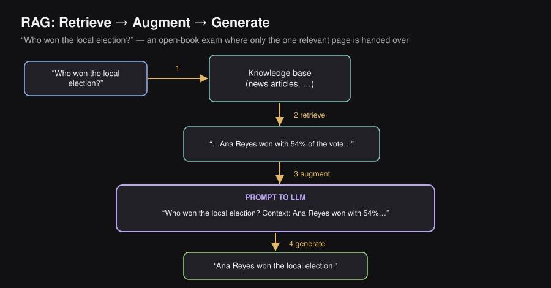
Without RAG, this question goes straight to the LLM, which — per Section 9.1 — has no idea, because the election happened after its training cutoff.
With RAG, the pipeline intercepts the question first:
┌─────────────────┐ ┌──────────────────────┐
│ "Who won the │──1────▶│ Knowledge base │
│ local election?"│ │ (news articles, etc) │
└─────────────────┘ └──────────┬────────────┘
│ 2. retrieve most
│ relevant chunk(s)
▼
┌───────────────────────────────────────┐
│ "The election was held on Oct 15th. │
│ Candidate Ana Reyes won with 54% of │
│ the vote..." │
└──────────────────┬──────────────────────┘
│ 3. augment: glue
│ retrieved text to
│ the original prompt
▼
┌───────────────────────────────────────────────────────────┐
│ PROMPT TO LLM: │
│ "Who won the local election? Context: The election was │
│ held on Oct 15th. Candidate Ana Reyes won with 54%..." │
└──────────────────────────┬──────────────────────────────────┘
│ 4. generate
▼
┌────────────────────────┐
│ "Ana Reyes won the │
│ local election." │
└────────────────────────┘In effect, RAG is “give the LLM an open-book exam instead of a closed-book one” — but only hand it the one relevant page, not the entire library.
Why the retrieval step is the whole ballgame
Here’s a subtlety worth internalizing early: the LLM’s generation step is only as good as what it was handed. If step 2 (retrieve) fetches the wrong document, no amount of generation brilliance in step 4 will save you — the model will confidently answer based on wrong context, or worse, blend the wrong context with its own (possibly outdated) internal knowledge.
This is why the overwhelming majority of RAG engineering effort — and the overwhelming majority of the rest of this chapter — goes into making the retrieval step as good as it can possibly be. “Building a RAG system” is, in practice, 90% “building a good retriever” and 10% “writing a prompt template.”
Key takeaways
- RAG = Retrieve → Augment → Generate, in that literal order.
- It solves the knowledge-cutoff problem without touching the model’s weights.
- Generation quality is capped by retrieval quality — garbage in, garbage out. This motivates everything in the retrieval sections that follow.
9.3 — Building a Knowledge Base
Before you can retrieve anything, you need something to retrieve from. This is called the knowledge base, and building one is a three-step pipeline.
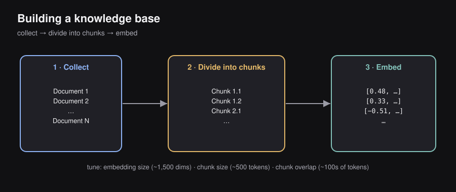
┌───────────┐ ┌───────────┐ ┌───────────┐
│ Document 1│ │ Chunk 1.1 │ │ [0.48, ...]│
│ Document 2│ ───▶ │ Chunk 1.2 │ ───▶ │ [0.33, ...]│
│ ... │ │ Chunk 2.1 │ │ [-0.51,...]│
│ Document N│ │ ... │ │ ... │
└───────────┘ └───────────┘ └───────────┘
COLLECT DIVIDE EMBEDStep 1 — Collect
Gather every document that might plausibly be useful for answering the kinds of questions your system will face: manuals, wikis, news archives, codebases, support tickets, whatever fits your use case.
Step 2 — Divide into chunks
A chunk is a bounded-length slice of a document — typically measured in number of tokens. You cannot feed an entire 400-page manual into a prompt for every query, so documents get sliced into small, retrievable pieces.
Why not just retrieve whole documents? Two reasons: (1) a whole document is usually far more text than is relevant to any one question, which reintroduces the “irrelevant information degrades performance” problem from Section 9.1; and (2) the embedding for an entire long document tends to be a blurry average of many different topics, which makes it a poor target for precise similarity search. Small, focused chunks give you both precision and efficiency.
Step 3 — Embed
Each chunk gets converted into an embedding: a fixed-length numerical vector that captures the meaning of the text (recall from earlier chapters — this is the same idea behind token/word embeddings, just applied at the level of a whole passage). Chunks with similar meaning end up with vectors that point in similar directions in this high-dimensional space.
The three hyperparameters you must tune
| Hyperparameter | Typical order of magnitude | The trade-off |
|---|---|---|
| Embedding size | ~1,000s of dimensions (e.g. 1,536) | Bigger → captures more nuance, but costs more storage and compute at query time. Smaller → cheaper, but may blur together distinct meanings. |
| Chunk size | ~100s of tokens (e.g. ~500) | Too small → chunks lose surrounding context and stop making sense on their own. Too large → the embedding becomes a blurry average of multiple ideas, hurting retrieval precision. |
| Chunk overlap | ~100s of tokens (low hundreds) | Naive non-overlapping chunks can cut a sentence or idea in half at a boundary. A modest overlap between consecutive chunks ensures no piece of information gets orphaned at a cut point. |
Common pitfall. Chunking “naively” by a fixed token count, blind to document structure, can produce nonsensical fragments — e.g. splitting a JSON object or a Markdown table exactly in half. Structure-aware chunking (splitting along paragraph, section, or schema boundaries) is a cheap and high-leverage improvement over naive fixed-size chunking. We’ll also meet a smarter fix — contextual retrieval — in Section 9.9, which repairs context lost at chunk boundaries.
Should you train your own embedding model? You have two options: use a pretrained embedding model (the overwhelmingly common choice — trained specifically for the job of representing text for retrieval), or train your own for a niche domain. We’ll see exactly how such models are trained in the next section.
Key takeaways
- Knowledge base construction = Collect → Divide into chunks → Embed.
- Chunk size and overlap are a precision/context trade-off; embedding size is a fidelity/cost trade-off.
- Chunking should ideally respect document structure, not just blindly cut every N tokens.
9.4 — The Two-Stage Retrieval Pipeline
Given a user’s query, how do you find the right chunks out of possibly millions? Real-world retrieval systems (this is directly borrowed from decades of search-engine and recommendation-system engineering) split the problem into two stages with different objectives:
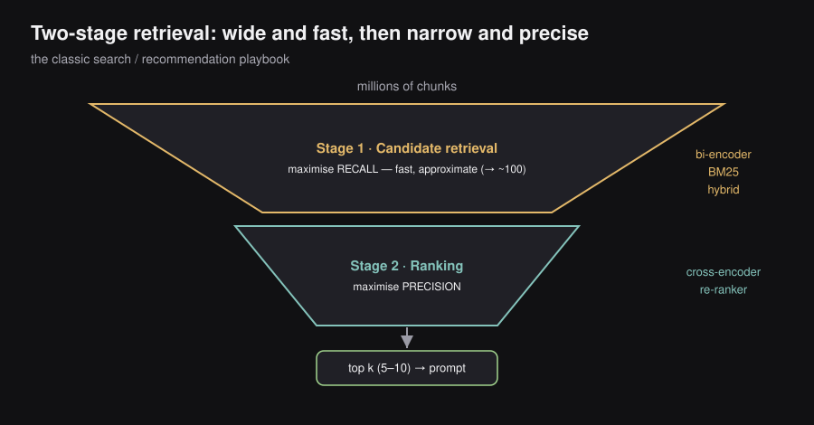
millions of chunks
│
▼
┌──────────────────────┐
│ STAGE 1 │ Objective: maximize RECALL
│ Candidate Retrieval │ "don't miss anything potentially relevant"
│ (fast, approximate) │ millions → ~100 candidates
└──────────┬────────────┘
│ ~100 candidates
▼
┌──────────────────────┐
│ STAGE 2 │ Objective: maximize PRECISION
│ Ranking (Re-ranking) │ "of those ~100, which are TRULY relevant, and in what order"
│ (slow, precise) │ ~100 → top k (e.g. top 5–10)
└──────────┬────────────┘
│ top k chunks
▼
final promptWhy split the job in two instead of doing one careful pass over everything? Because there’s an unavoidable speed vs. accuracy trade-off:
- A method precise enough to correctly judge relevance out of millions of candidates would be far too slow to run millions of times per query.
- A method fast enough to run millions of times per query isn’t precise enough to give you a trustworthy final ranking.
So Stage 1 uses a cheap, approximate method to aggressively cut the field down (optimizing so that you don’t accidentally throw away something relevant — i.e., recall), and Stage 2 spends more compute per candidate, but only has to do it ~100 times instead of millions of times (optimizing so that what’s left at the top is actually right — i.e., precision).
Stage 2 is often described as optional — for simple use cases, the ranking that falls out of Stage 1 alone may be good enough. But whenever retrieval quality matters, Stage 2 earns its keep.
The next several sections work through Stage 1 (Sections 9.5–9.7, plus two extensions in Sections 9.8–9.9) and then Stage 2 (Section 9.10), before we discuss how to measure whether any of this is actually working (Section 9.11).
Key takeaways
- Retrieval is two stages: cheap/broad candidate retrieval (recall-focused), then expensive/narrow ranking (precision-focused).
- This mirrors the classic search/recommendation-system playbook — the LLM world borrowed it wholesale.
9.5 — Stage 1a: Semantic Search with Bi-Encoders
The core operation: comparing embeddings
Recall from Section 9.3 that every chunk is embedded into a vector. At query time, we embed the user’s query with the same kind of encoder, and now the retrieval problem becomes purely geometric: find the chunk vectors that point in a direction closest to the query vector.
The standard way to measure “how close two directions are” is cosine similarity:
where is the query embedding, is a chunk embedding, and is the embedding dimension. This produces a score in : means “pointing in exactly the same direction” (maximally similar meaning), means “unrelated,” and means “pointing in opposite directions.”
Tiny worked example. Suppose (using a toy 3-dimensional embedding for illustration) and .
A score of out of a max of tells us these two vectors — and hence, presumably, the query and chunk they represent — are quite semantically close.
Note on distance metrics. You will also see people use L2 (Euclidean) distance instead of cosine similarity. If both vectors are normalized to unit length (), the two are related by a simple identity: So, for unit-normalized vectors, minimizing L2 distance and maximizing cosine similarity are the same optimization problem in disguise. In practice, nearly every embedding-based retriever you’ll encounter is “basically cosine similarity,” whatever the specific library calls it.
Where do these embeddings come from? The bi-encoder architecture
Both the query and each chunk get passed through an encoder — typically an encoder-only Transformer of the BERT family, which you already know well from earlier chapters — independently, to produce their embeddings:
Query ──▶ [ Encoder ] ──▶ [0.48, -0.51, ...] ─┐
├── cosine similarity ──▶ score
Chunk ──▶ [ Encoder ] ──▶ [-0.82, -0.43, ...] ─┘
("Encoder" is the SAME model/weights, applied twice, independently)This setup — one shared (or twin) encoder, applied separately to the query and to the document, with no interaction between the two until the final similarity computation — is called a bi-encoder. (“Bi” = two independent passes.)
The crucial engineering payoff of the bi-encoder design: chunk embeddings can be computed once, offline, ahead of time, and cached. At query time, you only need to run the encoder once — on the query — and then compare against the precomputed chunk vectors. This is precisely why bi-encoders are fast enough to serve as Stage 1 (candidate retrieval) over millions of chunks.
How is such an encoder trained? The relevant paper here is Sentence-BERT (Reimers & Gurevych, 2019), which extends BERT specifically for this purpose. Ordinary BERT gives you token-level embeddings; S-BERT is fine-tuned (typically with a contrastive-style loss) so that it produces a single embedding per sequence, explicitly optimized so that semantically similar texts get high cosine similarity and dissimilar texts get low cosine similarity. If you already understand BERT’s architecture from earlier chapters, the S-BERT paper is a quick, worthwhile read — it’s mostly about the training objective, not a new architecture.
Searching efficiently: approximate nearest neighbor (ANN)
A subtlety: if your knowledge base has millions of chunks, computing cosine similarity against every single one for every query (an exhaustive linear scan) becomes a real bottleneck. In practice, systems use Approximate Nearest Neighbor (ANN) search: the embedding space is pre-partitioned (e.g., via clustering or graph-based indexing structures) at knowledge-base-build time, so that at query time you only need to compare against a small, promising subset of chunks rather than the entire base — trading a small amount of retrieval accuracy for a large speedup. You don’t need to implement this from scratch; mature libraries exist specifically for ANN search over embeddings.
What “semantic” search cannot guarantee
Here’s a subtlety that will motivate the next section. Semantic similarity is about meaning, not about shared words. Consider a toy knowledge base about two teddy bears, Cuddly and Huggy, and the query “Where is Cuddly?” Semantic (embedding) search might retrieve a passage like “…he was in a cuddly mood…” or even a passage about Huggy — because “cuddly” and “Huggy” can land close together in meaning-space (both evoke warmth and affection) — without either passage containing the literal keyword you actually care about. There is no guarantee that keyword overlap survives an embedding-based search. Sometimes you specifically want keyword overlap. That’s the subject of the next section.
Key takeaways
- Bi-encoders embed the query and each chunk independently, then compare via cosine similarity.
- The independence is the whole point: chunk embeddings are precomputed once, making Stage 1 fast enough for millions of chunks.
- Cosine similarity and (unit-normalized) L2 distance are mathematically two views of the same thing.
- Semantic search finds meaning, not keywords — it can miss documents that share no words with the query, even if it’s plausible.
9.6 — Stage 1b: Keyword Search with BM25
Motivation
Continuing the Cuddly/Huggy example: sometimes you need a guarantee that retrieved text actually contains the query’s keywords — think of searching for an exact product SKU, an error code, a legal clause number, or a person’s exact name. Pure semantic search offers no such guarantee. For this, we reach for a much older, purely statistical family of methods: heuristic keyword matching.
BM25: a relevance heuristic, not a learned model
BM25 (“Best Matching 25”) is not a neural network at all — it’s a hand-designed scoring formula based on term overlap between the query and a document, refined from decades of information-retrieval research. Given a query made of terms and a document :
Let’s unpack every symbol:
| Symbol | Meaning |
|---|---|
| how many times term appears in document (raw term frequency) | |
| length of document , in tokens | |
| average document length across the whole knowledge base | |
| a tunable constant (typically –) controlling term-frequency saturation | |
| a tunable constant in (typically ) controlling how strongly document length is penalized | |
| inverse document frequency — rewards rare, informative terms over common ones |
The IDF term itself is typically computed as:
where is the total number of documents in the knowledge base and is the number of documents containing term . Intuitively: if a term appears in almost every document (like “the”), and — it carries almost no discriminative signal. If a term is rare (like “geodesic” or a specific product code), is large — matching on it is a strong relevance signal.
Why the formula is shaped this way
Two design choices deserve explicit intuition:
- Term-frequency saturation (). Notice the term-frequency factor is not linear in . As , this factor approaches a ceiling of . This encodes a real-world intuition: a document that mentions your keyword 10 times is probably more relevant than one that mentions it once, but a document that mentions it 100 times is not 10× more relevant than the 10-mentions document — relevance saturates. Without this saturation, a document could game the score just by repeating a word endlessly.
- Length normalization (). The denominator’s term penalizes long documents, which are statistically more likely to contain any given keyword by sheer chance, unless (which disables length normalization entirely).
Worked mini-example
Suppose our query is “cuddly bear” and we’re scoring two toy documents (ignore IDF differences for simplicity, and imagine , , ):
- Document A (length 8 tokens): contains “cuddly” once, “bear” once.
- Document B (length 40 tokens): contains “cuddly” once, “bear” once.
Both raw term frequencies are identical ( for each term in each document), but Document A is much shorter than average, so is small (favorable), while Document B is 4× longer than average, so that ratio is large (unfavorable). Plugging into the term-frequency factor for “cuddly” in each:
Document A’s per-term score (≈1.10) comes out noticeably higher than Document B’s (≈0.43), even though both contain the exact same keywords the exact same number of times — purely because Document A is short and focused, while Document B is long and the match is “diluted.” This is length normalization at work.
Key takeaways
- BM25 is a hand-crafted statistical formula, not a trained neural model — fast, interpretable, and guarantees literal keyword overlap.
- It rewards rare/informative terms (via IDF), saturates on repeated terms (via ), and penalizes overly long documents (via ).
- BM25 complements semantic search precisely where semantic search is weakest: guaranteed literal matches.
9.7 — Stage 1c: Hybrid Search
The natural conclusion
Sections 4 and 5 presented two retrieval philosophies with complementary failure modes:
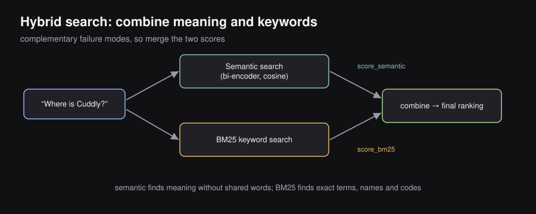
| Semantic search (bi-encoder) | BM25 (keyword) | |
|---|---|---|
| Finds | Meaning, even without shared words | Literal keyword/term overlap |
| Misses | Exact terms, codes, names if phrased differently | Paraphrases, synonyms, conceptual matches |
| Nature | Learned (neural embeddings) | Heuristic (statistical formula) |
Given these are complementary rather than redundant, the natural move is to combine them: run both searches, and merge the scores (a common approach is a weighted sum of the normalized semantic score and the normalized BM25 score, though rank-fusion techniques are also common) into a single ranking. This is called hybrid search.
┌─────────────────────┐
│ Semantic search │──▶ score_semantic
"Where is │ (bi-encoder, cosine) │
Cuddly?" ───┬──▶└─────────────────────┘
│ combine
│ ┌─────────────────────┐ │
└───▶│ BM25 keyword search │──▶ score_bm25 ┴──▶ final ranking
└─────────────────────┘When to reach for hybrid search
There’s no universal answer — this is a use-case-dependent engineering decision. If your users tend to search with exact identifiers, jargon, or codes, keyword search matters a lot and hybrid search is nearly mandatory. If your users tend to ask conceptual, paraphrased questions, semantic search alone may already cover most cases. In production RAG systems, hybrid search is a very common default, precisely because it hedges against both failure modes at once.
Key takeaways
- Hybrid search = semantic search + BM25, combined, to catch both conceptual matches and literal keyword matches.
- The right blend is use-case dependent; there’s no free lunch, but hybrid is a safe, common default.
9.8 — Extension: HyDE (Hypothetical Document Embeddings)
A subtle mismatch nobody mentions at first
Here’s a problem hiding in plain sight in Section 9.5. We embed the user’s query (typically a short question, like “Where is Cuddly?”) with the same encoder we used to embed our chunks (typically long, descriptive passages, like “Cuddly spends most days surrounded by books…”). But a short question and a long descriptive passage are, stylistically, very different kinds of text — even when they’re “about” the same thing. Bi-encoders trained mostly on symmetric text pairs can therefore end up placing questions and their correct answering-passages further apart in embedding space than we’d like, purely because of this style mismatch, not a meaning mismatch.
The HyDE trick
HyDE — Hypothetical Document Embeddings (Gao et al., 2022, “Precise Zero-Shot Dense Retrieval without Relevance Labels”) — sidesteps the mismatch with a clever inversion:
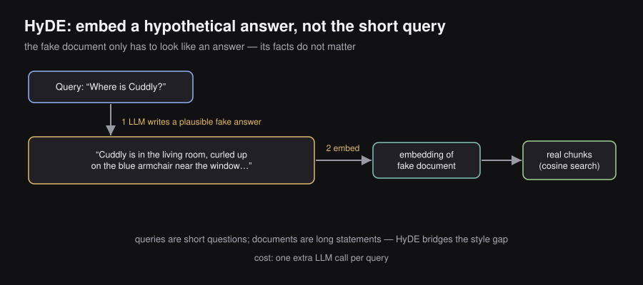
Query: "Where is Cuddly?"
│
│ 1. ask an LLM to write a FAKE, hypothetical
│ answer (it doesn't have to be TRUE)
▼
Fake document: "Cuddly is in the living room, curled up
on the blue armchair near the window..."
│
│ 2. embed the FAKE document (not the query!)
▼
Embedding of fake doc ──▶ cosine similarity search ──▶ real chunksInstead of embedding the short query directly, you first make an LLM call to generate a plausible-looking, hypothetical answer to the query — a fake document, in the same style and length as your real chunks — and then embed that to perform the similarity search. The genius of this: the fake document’s facts don’t need to be correct. What matters is that it now has the same style, structure, and vocabulary distribution as your real documents, so it embeds into a “neighborhood” of embedding space much closer to the real, correct chunk than the original terse query ever could.
Common pitfall. Don’t misread HyDE as “ask the LLM the answer and trust it” — that would defeat the entire purpose of RAG! The hypothetical document is only ever used as a retrieval key, never shown to the user or treated as a real answer. It’s a bridge to better retrieval, not a shortcut around retrieval.
HyDE is not universally necessary — it’s an extra LLM call, so an extra cost and latency hit — but it’s a good technique to have in your toolbox and try when query-to-document style mismatch seems to be hurting retrieval quality.
Key takeaways
- Queries and documents have systematically different styles, which can hurt naive semantic search.
- HyDE fixes this by embedding a generated hypothetical answer instead of the raw query — factual correctness of the hypothetical document doesn’t matter, only its stylistic similarity to real documents.
9.9 — Extension: Contextual Retrieval and Prompt Caching
The problem chunking creates
Back in Section 9.3, we flagged that naive fixed-size chunking can chop up context awkwardly. Here’s the sharper version of that problem: even a “clean” chunk, cut along sensible boundaries, can still be ambiguous when read in isolation. A chunk that says “Its revenue grew by 12% that quarter” is uselessly vague without knowing which company, and which quarter, the surrounding document was talking about.
The fix: prepend situating context
Contextual Retrieval (introduced by the Anthropic team, 2024) solves this by generating a short blurb of context for each chunk, derived from the whole document it came from, and prepending it to the chunk before embedding:
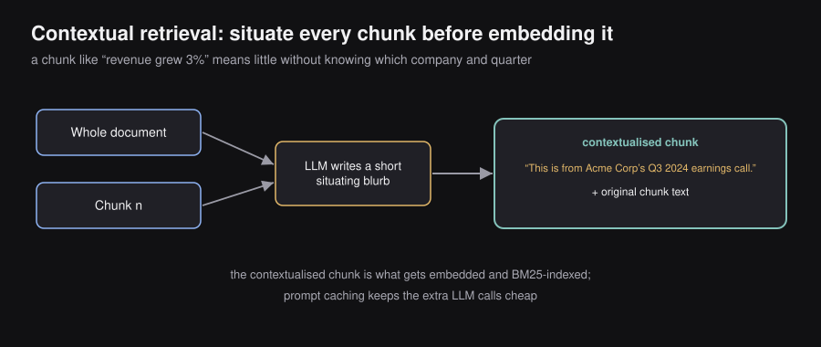
Chunk 1 ──┐ ┌─▶ "Context 1: This is from Acme
Chunk 2 │ generate contextual │ Corp's Q3 2024 earnings call."
... │──▶ summary for each ───▶│ + Chunk 1
Chunk n ──┘ chunk └─▶ ...The prompt used to generate this per-chunk context is straightforward — feed the whole document plus the specific chunk, and ask for a short blurb:
<document>
{WHOLE_DOCUMENT}
</document>
Here is the chunk we want to situate within the whole document:
{CHUNK_CONTENT}
Please give a short succinct context to situate this chunk within the overall
document for the purposes of improving search retrieval of the chunk. Answer
only with the succinct context and nothing else.Now the contextualized chunk — original text plus a short situating summary — gets embedded (and/or BM25-indexed) instead of the bare chunk. This directly repairs the “ambiguous in isolation” problem.
“Wait, isn’t that a huge number of extra LLM calls?”
Yes — naively, this requires one LLM call per chunk, and a large knowledge base can have an enormous number of chunks. But notice something about every one of these calls: the prompt prefix is identical across all of them — it’s always the full document text, with only the specific chunk snippet changing at the end.
This is exactly the situation prompt caching is designed for. Recall from earlier chapters that LLMs are decoder-only Transformers that process text strictly left-to-right: the internal activations (specifically, the Key/Value representations used by attention at every layer) computed for a given prefix depend only on that prefix, not on anything that comes after it. That means: if the same prefix is reused across many calls, its Key/Value activations can be computed once and reused (looked up), instead of being recomputed from scratch every single time.
Call 1: [ WHOLE_DOCUMENT (long prefix) ][ Chunk 1 ] → compute + CACHE prefix KV
Call 2: [ WHOLE_DOCUMENT (same prefix) ][ Chunk 2 ] → REUSE cached prefix KV, only compute for Chunk 2
Call 3: [ WHOLE_DOCUMENT (same prefix) ][ Chunk 3 ] → REUSE cached prefix KV, only compute for Chunk 3
...Providers expose this as a pricing feature: on model pricing pages, you’ll typically see a separate, much cheaper price for cached input tokens versus regular input tokens — for some providers, on the order of 1/10th the normal input price. The practical lesson: structure your prompts so that anything likely to repeat across many calls (like a whole reference document, or a large tool-definition block, or a long system prompt) comes first, and the part that varies per call comes last. This lets the caching mechanism do maximum work for you.
Key takeaways
- Chunks read in isolation can lose crucial context (which document, which section, which entity) — Contextual Retrieval fixes this by prepending an LLM-generated situating summary to each chunk before embedding.
- The resulting flood of extra LLM calls is made cheap via prompt caching, which exploits the fact that decoder-only Transformers can reuse cached Key/Value activations for any shared prefix.
- Design rule of thumb: put repeated/shared content early in the prompt, variable content late, to maximize cache hits.
9.10 — Stage 2: Ranking with Cross-Encoders
What bi-encoders leave on the table
Recall the bi-encoder’s defining trait from Section 9.5: the query and the chunk are encoded completely independently — the encoder never sees them together. That’s what makes bi-encoders fast, but it’s also a real limitation: the model can never learn fine-grained interactions between specific words in the query and specific words in the chunk, since by the time we compare them, they’ve already been compressed down into two separate fixed-size vectors.
The cross-encoder architecture
For Stage 2 (ranking), we can afford to be much more careful, because we’re now only scoring ~100 candidates instead of millions. This is where the cross-encoder comes in:
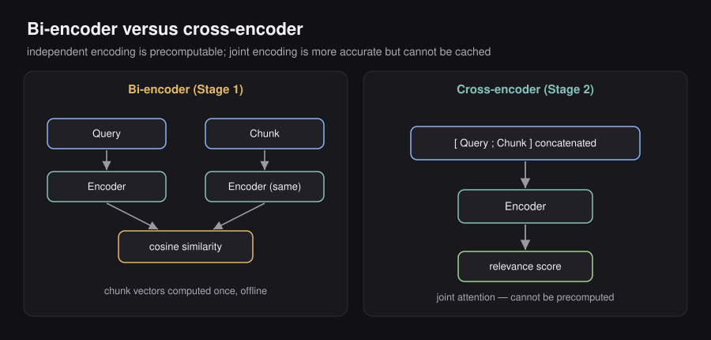
[ Query ; Chunk ] ───▶ [ Encoder ] ───▶ relevance score (single number)
(query and chunk are CONCATENATED and fed through the encoder TOGETHER)Instead of two independent passes, the query and chunk are concatenated into a single input and passed through the encoder together, in one forward pass, producing a single relevance score directly. Because the self-attention mechanism now operates across both the query’s tokens and the chunk’s tokens simultaneously, the model can directly attend from query words to chunk words and vice-versa — capturing much richer, fine-grained relevance signals than a bi-encoder’s “compare two frozen vectors” approach ever could.
Bi-Encoder: score = cosine( Encoder(query), Encoder(chunk) ) ← cheap, precompute-able
Cross-Encoder: score = Encoder( query ⊕ chunk ) ← expensive, joint attentionWhy we can’t just always use cross-encoders
If cross-encoders are more accurate, why not skip bi-encoders entirely? Because cross-encoders cannot be precomputed. Since the score depends jointly on the specific query and the specific chunk, you cannot embed chunks ahead of time and reuse them across different queries — every new query requires a fresh forward pass per candidate chunk. Running a full Transformer forward pass for every one of millions of chunks, for every single query, is computationally infeasible at scale. This is precisely why the two-stage pipeline exists: use the cheap bi-encoder to narrow millions of chunks down to ~100 plausible candidates, then spend the cross-encoder’s extra compute only on that small, pre-filtered set.
Putting it together
d, b, a, c (unordered candidates from Stage 1)
│
▼
┌─────────────┐
│ Re-Ranker │ scores each (query, chunk) pair jointly
│(cross-encoder)│
└──────┬───────┘
▼
a (1), b (2), c (3), d (4) ← final ranked orderKey takeaways
- Cross-encoders jointly encode query and chunk together, capturing rich interactions — but at the cost of being non-precomputable and much slower per pair.
- The two-stage design (bi-encoder → cross-encoder) is precisely engineered to get the speed of bi-encoders and the accuracy of cross-encoders, by applying each where it’s cheapest to apply.
9.11 — Evaluating Retrieval Quality
Setup: what are we even measuring?
To evaluate a retriever, you need ground-truth relevance labels: for a given query, which chunks in the knowledge base are actually relevant (this is typically curated by humans, or by another strong LLM, ahead of time). Then, given your system’s top- retrieved chunks (in ranked order, positions ), you compare the predicted ranking against the ground truth using a handful of standard information-retrieval metrics.
Ranking Is it actually relevant?
──────── ──────────────────────
position 1 ───▶ ✓ / ✗
position 2 ───▶ ✓ / ✗
... ...
position k ───▶ ✓ / ✗
─────────── (cutoff at k) ───────────
position k+1 ───▶ (not considered — outside top k)
...
position nNDCG@k — Normalized Discounted Cumulative Gain
This is the richest of the four metrics because it accounts for both whether a chunk is relevant and how high it’s ranked.
Step 1 — Discounted Cumulative Gain (DCG). The intuition: a relevant document at rank 1 is more valuable than the exact same relevant document sitting at rank 10 — so we discount (shrink) its contribution the further down the ranking it sits.
where (or a graded relevance score) is the relevance label of the chunk sitting at rank . Notice the denominator grows slowly, so the discount is gentle for early ranks and increasingly harsh for later ones — this is the “discount” in the name. The sum itself, accumulating gain from position 1 through , is the “cumulative gain” part.
Step 2 — Normalize against the best-possible ranking. DCG’s raw value depends on how many relevant documents exist for that query, which varies query to query — that makes raw DCG scores incomparable across different queries. So we compute the Ideal DCG (IDCG@k): the DCG you’d get if you had ranked all the truly relevant chunks first, in the best possible order. Then:
This guarantees , with meaning “you achieved the best possible ranking” — regardless of how many relevant documents existed for that particular query. This normalization is what makes NDCG comparable and averageable across many different queries.
Worked numeric example. Suppose for a query with , your system retrieves 4 chunks with relevance labels (in ranked order) (relevant, irrelevant, relevant, irrelevant), and suppose there are exactly 2 truly relevant chunks in total for this query.
The ideal ranking would put both relevant chunks first: :
A score of (out of a max of ) tells us the ranking is quite good, but not perfect — it lost a small amount of credit because the second relevant chunk landed at position 3 instead of position 2.
RR@k / MRR — (Mean) Reciprocal Rank
A much simpler metric: it only cares about the position of the first relevant result.
If the first relevant chunk is at position 1, (perfect). If it’s at position 4, . Averaged (the mean in Mean Reciprocal Rank) across many queries, this gives MRR. The intuition for why this is useful: in many real applications, if the very top result isn’t relevant, the user experience already suffers — everything past the first relevant hit is, in some sense, “bonus,” which is why RR deliberately ignores every relevant document after the first one.
Recall@k and Precision@k
These are the direct ranking-world analogues of the classification metrics you already know:
- Recall@k asks: of all the chunks that were actually relevant, how many did we manage to surface in our top ? High recall means you’re not missing important information.
- Precision@k asks: of the chunks we retrieved, how many were actually relevant? High precision means you’re not cluttering the LLM’s context with junk.
Using the worked example from 10.2 (, 2 total relevant chunks, ): Recall@4 (we found both relevant chunks somewhere in the top 4), while Precision@4 (only half of what we retrieved was actually useful).
Choosing a metric
| Metric | What it captures | Use it when… |
|---|---|---|
| NDCG@k | Relevance and position, normalized | You care about getting the best items ranked highest, and want a single comparable score across queries |
| RR@MRR@k | Position of the first relevant hit only | Users mostly act on the very top result |
| Recall@k | Coverage — did you miss anything relevant | Missing information is costly (e.g. legal/medical search) |
| Precision@k | Purity — is what you retrieved actually useful | Context budget is tight and noise actively hurts the LLM |
Benchmarking retrievers: MTEB
If you want to compare retriever/embedding-model choices in a standardized way rather than just on your own private data, the Massive Text Embedding Benchmark (MTEB) is the most widely used community benchmark: it evaluates embedding models across many tasks (including retrieval) and reports exactly these kinds of ranking metrics, letting you compare models on a public leaderboard before committing to one for your system.
Key takeaways
- NDCG@k rewards relevant documents ranked high, and is normalized to so it’s comparable across queries with different numbers of relevant documents.
- RR/MRR cares only about the position of the very first relevant hit.
- Recall@k (did we find everything relevant?) and Precision@k (is what we found actually relevant?) are the classic coverage/purity trade-off, now applied to ranked lists.
- MTEB is the standard public benchmark for comparing embedding/retrieval models.
9.12 — RAG: Chapter Summary
| Concept | One-line takeaway |
|---|---|
| Motivation | LLMs have a frozen knowledge cutoff; naive “stuff it all in context” fails on cost, distraction, and scale |
| RAG | Retrieve → Augment → Generate |
| Knowledge base | Documents → Chunks → Embeddings, tuned via chunk size / overlap / embedding size |
| Two-stage retrieval | Candidate retrieval (recall-focused, cheap) → Ranking (precision-focused, expensive) |
| Bi-encoder | Independent encoding of query & chunk; fast; precomputable; powers Stage 1 |
| BM25 | Heuristic keyword overlap score; guarantees literal term matches; powers Stage 1 (alternative/complement) |
| Hybrid search | Combine bi-encoder + BM25 to catch both conceptual and literal matches |
| HyDE | Embed a generated hypothetical answer instead of the raw query, to fix query/document style mismatch |
| Contextual Retrieval | Prepend an LLM-generated situating summary to each chunk before embedding, to fix “chunk out of context” |
| Prompt caching | Reuse cached Key/Value activations for repeated prompt prefixes — makes Contextual Retrieval’s many LLM calls cheap |
| Cross-encoder | Jointly encode query+chunk together; accurate but not precomputable; powers Stage 2 |
| NDCG@k, MRR, Recall@k, Precision@k | The standard toolkit for measuring whether your retriever is actually good |
| MTEB | Standard public benchmark for comparing retriever/embedding models |
9.13 — From Unstructured to Structured: Why Tools?
RAG’s blind spot
Everything in the retrieval sections assumed unstructured data — free-form text documents that you chunk and search over. But a huge amount of real-world useful information doesn’t look like that at all. Think of a database table:
| ID | Field | Observation |
|---|---|---|
| 123 | Temperature | 65°F |
| 124 | Humidity | 40% |
| … | … | … |
There’s no “chunk” to retrieve here — the useful operation is a precise lookup: give me the Observation for a specific ID and Field. This is naturally expressed as a function call, not a text search:
def get_data(id, field, ...):
# look up the value
return resultThis reframing — “let the LLM interact with any system that can be expressed as a callable function” — is the seed of tool calling (also called function calling). Note that RAG handles unstructured knowledge access, while tool calling handles structured data access and, crucially, real-world actions (sending an email, adjusting a thermostat, executing code) — the two techniques are complementary, not competing, and production systems frequently use both side by side.
A working definition
A commonly cited definition (IBM): “Tool calling allows autonomous systems to complete complex tasks by dynamically accessing and [may] act upon external resources.” Two pieces of this are worth pulling out explicitly:
- Complete tasks, not just answer questions — this is a step-change beyond plain text generation.
- Dynamically accessing external resources — the LLM itself decides, at inference time, whether and what to call, based on the conversation so far. Nothing about this is hard-coded per-query by a human.
Common pitfall. Note the definition doesn’t strictly require external resources — but in nearly all practical use, “the LLM can complete complex tasks that go beyond text generation, often by dynamically calling external systems” captures the spirit of it.
Key takeaways
- RAG handles unstructured text; tool calling handles structured data access and real-world actions, via functions.
- Tool calling lets the LLM dynamically decide, per query, whether and what to call — it’s not a hardcoded workflow.
9.14 — Anatomy of a Tool
Let’s ground this in a concrete, running example used throughout this chapter: a user wants to find a nearby teddy bear. (“Find a teddy bear near me!”)
What the LLM is shown vs. what actually runs
This is the single most important distinction in this entire section, so let’s state it up front and never violate it:
The LLM only ever sees a function’s signature and documentation — never its implementation. All the actual code (API calls, database queries, calculations) lives in your application, completely invisible to the model.
def find_teddy_bear(location: tuple[float, float]) -> TeddyBearInfo:
"""
Finds the nearest teddy bear to the given GPS coordinates.
Parameters:
location: A (latitude, longitude) pair representing the user's
current location.
Returns:
TeddyBearInfo: Information about the nearest teddy bear found.
"""
# ── Everything below this line is INVISIBLE to the LLM ──
user_lat, user_lon = location
response = requests.get(API_URL, params={"latitude": user_lat, "longitude": user_lon})
closest_teddy_bear = response.json()
distance = geodesic((user_lat, user_lon), closest_teddy_bear["coords"]).meters
return TeddyBearInfo(
name=closest_teddy_bear["name"],
distance_meters=round(distance, 2),
mood=closest_teddy_bear["mood"],
message=f"{closest_teddy_bear['name']} is {closest_teddy_bear['mood']} and only {round(distance,2)} meters away!",
)The three ingredients every tool needs
┌───────────────────────────────────────────────────┐
│ TOOL DEFINITION (what the LLM sees) │
│ │
│ 1. Name + documentation ── tells the LLM WHAT │
│ this function is for, in natural language │
│ │
│ 2. Input / output schema ── tells the LLM HOW │
│ to call it (argument names, types) and WHAT │
│ shape of answer to expect back │
│ │
│ 3. (Behind the scenes, invisible to the LLM): │
│ an implementation that may make a real backend │
│ call and return a well-structured, interpretable │
│ result │
└───────────────────────────────────────────────────┘The documentation (the docstring) is not optional decoration — it is the only signal the LLM has for deciding when and how to use this function. A vague or missing docstring is one of the most common reasons a tool-calling system underperforms.
Note also that these function APIs are defined ahead of time by a human developer — they are not invented on the fly by the LLM. The LLM’s job is only to decide when to invoke a predefined tool and what arguments to pass.
Key takeaways
- A tool has three parts: documentation (for the LLM to understand it), a schema (for the LLM to call it correctly), and an implementation (invisible to the LLM, does the real work).
- Tools are predefined by developers; the LLM only selects among them and fills in arguments.
9.15 — The 3-Step Tool-Calling Flow
Every tool call, no matter how complex the surrounding system, decomposes into exactly three steps:
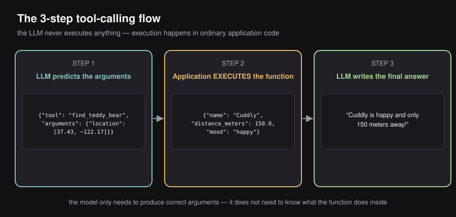
┌────────────────────────┐ ┌────────────────────────┐ ┌────────────────────────┐
│ STEP 1 │ │ STEP 2 │ │ STEP 3 │
│ LLM predicts arguments │──▶│ Application EXECUTES │──▶│ LLM generates final │
│ for the relevant tool │ │ the function (real code) │ │ natural-language answer │
└────────────────────────┘ └────────────────────────┘ └────────────────────────┘Step 1 — Argument prediction. The LLM is shown the tool’s API (name, docs, schema) plus the user’s query, plus any relevant context it already has (e.g., the user’s GPS coordinates, if location permissions were granted). It outputs only a structured call — nothing else:
{"tool": "find_teddy_bear", "arguments": {"location": [37.4275, -122.1697]}}Note carefully: the LLM is not inferring what the function does internally — it has no idea, and doesn’t need to. Its only job here is to correctly fill in the arguments for a call it has decided is appropriate.
Step 2 — Execution. This step has nothing to do with the LLM at all. Your application code takes the predicted tool name and arguments, actually calls the real function (hits the real API, queries the real database), and gets back a real, structured result:
{"name": "Cuddly", "distance_meters": 150.0, "mood": "happy",
"message": "Cuddly is happy and only 150.0 meters away!"}Step 3 — Response generation. This structured, JSON-like result is fed back into the LLM’s context, and the LLM is asked to turn it into a natural, user-facing response: “I found Cuddly! He’s happy and only 150 meters away from you.” The reason this step exists at all, rather than just handing the user raw JSON, is that users want prose, not data structures — and you often want that prose formatted in a specific house style, which is exactly what the next section’s SFT pairs are for.
Key takeaways
- Every tool call is: (1) LLM predicts arguments → (2) your code executes the real function → (3) LLM turns the structured result back into natural language.
- The LLM never executes anything itself — execution always happens in ordinary application code, outside the model.
9.16 — Teaching an LLM to Use Tools
There are two fundamentally different ways to get an LLM to reliably perform the 3-step flow from Section 9.15.
Method 1 — Via training (SFT)
You construct supervised fine-tuning pairs that explicitly demonstrate the desired behavior. Crucially, this requires two distinct kinds of SFT pairs, because Steps 1 and 3 of the flow are different skills:
| SFT pair type | Input | Desired output |
|---|---|---|
| Tool prediction | <function API> + user query |
The correct tool call with correct arguments, e.g. find_teddy_bear(location=(37.42,-122.17)) |
| Response generation | entire conversation history so far (original query + the tool call that was made + the tool’s returned result) | A natural-language final response, in your desired house style |
Two nuances worth internalizing: first, the response-generation pair’s input isn’t just “here’s a JSON blob, describe it” — it includes the whole conversation history, so the model learns to connect the final answer back to the original user intent, not just describe data in a vacuum. Second, if you have multiple tools, you’ll want your SFT dataset to include diverse examples — different tools, different phrasings, arguments grounded from explicit user statements vs. inferred from context (like location permissions), and even multi-turn conversations where a tool call happens mid-dialogue — so the model generalizes rather than memorizing one narrow pattern.
Method 2 — Via prompting (in-context, no training)
Modern LLMs already have a huge amount of code and structured-reasoning ability baked in from pretraining. So a natural question: do you even need SFT at all, or can you just explain the tool clearly in the prompt and let the model figure it out zero-shot or few-shot?
- Few-shot examples in context is one option — but it has a known weakness: it tends to generalize narrowly to variations that look like the examples you happened to include, rather than the full breadth of how humans might phrase a request.
- A detailed natural-language explanation of how to use the tool, placed in the system prompt, is the more scalable option — but writing such an explanation well is surprisingly hard to do by hand.
The trick: don’t write the explanation yourself — let a reasoning model optimize it for you. The recommended iterative process:
1. Write a rough DRAFT explanation of how to use the tool.
2. Build an EVALUATION SET: pairs of (query → expected tool call),
reusing exactly the kind of data you'd otherwise have used for SFT.
3. Run your current draft prompt against the evaluation set.
Record wins and losses per example.
4. Feed the draft + the wins/losses back to a POWERFUL REASONING MODEL,
and ask: "given these failures, how would you improve this
explanation?"
5. Iterate steps 3–4 until performance on the evaluation set is
satisfactory.This is a training-free alternative that reuses the same kind of labeled data you’d need for SFT (as an evaluation set instead of a training set), but skips the actual weight-update step — offloading the hard work of “writing a good explanation” onto a capable reasoning model rather than a human prompt engineer.
Key takeaway of this whole section: whether you go the SFT route or the prompting route, you fundamentally need the same underlying resource — a good, representative dataset of (query → correct tool call) pairs. The choice between “train on it” and “iterate a prompt against it” is an engineering trade-off (training cost & maintenance vs. inference-time prompt length & iteration effort), not a difference in what data you need to have in hand.
Key takeaways
- SFT-based tool teaching needs two kinds of pairs: query→tool-call, and (query+tool-call+result)→final response.
- Prompting-based tool teaching skips training, but writing a good tool-use explanation by hand is hard — the standard trick is to let a reasoning model iteratively refine the explanation against an evaluation set.
- Both approaches are grounded in the same underlying labeled data; they differ in whether that data trains weights or refines a prompt.
9.17 — What Tools Are Used For
Tool calling isn’t limited to the “find a teddy bear” toy example — the range of applications is genuinely enormous. Three broad, illustrative categories:
| Category | What it solves | Examples |
|---|---|---|
| Information | Overcomes the knowledge-cutoff problem (Section 9.1) via a different mechanism than RAG | Web search, live news/stock/weather lookups, codebase search |
| Computation | LLMs are surprisingly unreliable at precise arithmetic when done purely “in their head” via next-token prediction | Turn a math query into code, execute it, read back the exact result |
| Action | Lets the LLM actually do things in the world, not just describe them | Send an email, send a message, control a smart device, book an appointment |
Note the interesting relationship to RAG here: both RAG and the “information” category of tool calling solve the same underlying problem (the frozen knowledge-cutoff from Section 9.1) — they’re two different mechanisms for the same goal. RAG does it via similarity search over a pre-built knowledge base; tool calling does it via a live, on-demand API call (e.g., an actual search-engine call, rather than a search over a knowledge base you built in advance). In practice, systems very often use both.
For the “computation” category, the trick is elegant: rather than trusting the LLM’s raw token-prediction process to get, say, “” exactly right (a place where LLMs are known to be unreliable), you let the LLM generate the code that computes it, execute that code in a real interpreter, and read the exact result back — trading an unreliable implicit computation for a reliable explicit one.
Key takeaways
- Three broad tool categories: Information (overcome knowledge cutoff), Computation (offload arithmetic/logic to real code), Action (affect the real world).
- RAG and information-tool-calling solve the same underlying knowledge-cutoff problem via different mechanisms — they’re complementary, not competing.
9.18 — The Too-Many-Tools Problem and Tool Selection
Why “just add more tools” breaks down
A realistic LLM assistant doesn’t have one tool — it might have dozens: find_teddy_bear, hug_teddy_bear, check_teddy_mood, send_teddy_gift, schedule_playdate, send_message, and on and on. The naive approach — put every tool’s full definition into the context of every query, “just in case” — runs into exactly the problems Section 9.1 warned us about:
| Problem | Why it happens |
|---|---|
| Context window overload | Dozens or hundreds of full function signatures + docstrings can be a large chunk of your context budget, even before the actual conversation starts |
| Performance degradation | This is the needle-in-a-haystack problem again, now applied to tool definitions instead of documents — the right tool can get “lost” among many irrelevant ones, and the LLM’s selection accuracy drops |
| Maintenance overhead | Every tool needs to be defined, documented, and tested — for every LLM/format you support |
The fix: tool selection (a.k.a. routing)
The solution is structurally identical to the two-stage retrieval pipeline from the retrieval sections — which is not a coincidence, it’s the exact same idea, reapplied: filter down to a relevant subset before the expensive step, rather than showing everything to the expensive step.
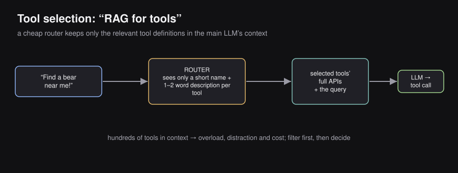
Step 1 Step 2
┌──────────────────┐ ┌─────────────────────┐
│ "Find a bear │──▶ ROUTER ──────▶│ <selected tool APIs> │──▶ LLM ──▶ tool call
│ near me!" │ (sees only short │ "Find a bear near │
│ │ name + 1-2 word │ me!" │
│ │ description per │ │
│ │ tool) │ │
└──────────────────┘ └─────────────────────┘Step 1. A lightweight router — which could itself be a smaller/cheaper LLM call, or an embedding-based similarity search over tool descriptions (i.e., quite literally “RAG, but retrieving tools instead of documents”) — looks at the query plus a minimal list of all available tools (just names and a one-or-two-word description each, not full signatures) and selects the small subset of tools that seem relevant to this specific query.
Step 2. Only the selected tools’ full definitions are placed into the main LLM’s context, alongside the query. The main LLM now makes its actual tool-call decision against a short, relevant menu instead of an overwhelming one.
Key insight. Tool selection is structurally “RAG for tools” — a retrieval step whose job is to keep only what’s relevant, before the expensive downstream step. It exists for exactly the same reason RAG exists: performance degrades and cost rises when you show a model more than it needs.
This general approach — a lightweight tool-selector model narrowing a large tool inventory down before the main model sees it — is described, for instance, in “Automatic Tool Selection to Reduce Large Language Model Latency” (Robert et al., 2024), which frames it explicitly as both a latency and an accuracy improvement.
Key takeaways
- Too many tools in context causes the same problems as too much text in context: overload, distraction, and cost.
- Tool selection/routing solves it the same way RAG solves the text version of the problem: a cheap filtering step first, followed by a focused, expensive step.
9.19 — Standardization: The Model Context Protocol (MCP)
The duplication problem
Suppose you’ve built a nice set of tools for your LLM application. Now you switch providers, or add a second LLM to your stack. Without a standard, you’d need to re-implement the same tool definitions in whatever bespoke format each LLM provider expects — real duplicated engineering effort, multiplied by every tool times every LLM you use.
LLM 1 ──▶ Tool 1 (bespoke format A)
LLM 2 ──▶ Tool 2 (bespoke format B) ← duplicated implementations,
LLM 3 ──▶ Tool 3 (bespoke format C) one per LLM providerMCP: one standard interface
The Model Context Protocol (MCP), introduced by Anthropic, standardizes how tools and data sources are exposed to any LLM application, so a tool provider implements their tool once, and it becomes usable by any MCP-compatible LLM application:
LLM 1 ──┐
LLM 2 ──┼──▶ [ MCP ] ──▶ Tool 1, Tool 2, Tool 3, ...
LLM 3 ──┘MCP vocabulary
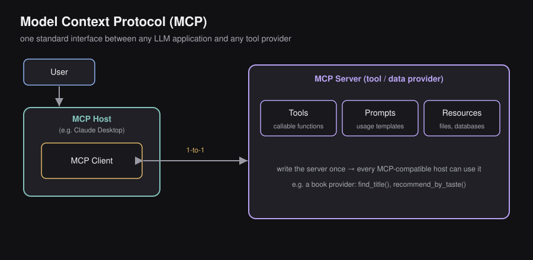
| Term | Role |
|---|---|
| MCP Host | The LLM application itself (e.g., Claude Desktop) — the thing the end user directly interacts with |
| MCP Client | Infrastructure living inside the host that talks to a specific MCP server; there’s a one-to-one connection between an MCP client and an MCP server |
| MCP Server | The instance that actually serves the tools/data for a given provider or domain |
| Tools | Callable functions exposed by the server — exactly the “function API” concept from Sections 13–14 |
| Prompts | Templates that show users/models a good way to use a given tool |
| Resources | External data sources (files, databases) the server can draw on while completing a task |
┌───────────────── MCP Server ─────────────────┐
┌──────────┐ │ │
│ User │ │ Tools Prompts Resources │
└────┬─────┘ └────────────────────────────────────────────┘
│
┌────▼─────┐
│ MCP Host │
│ ┌───────┐ │
│ │MCP │ │◀───────────────── (1-to-1 connection) ────────────────▶
│ │Client │ │
│ └───────┘ │
└──────────┘Worked example: recommending a poetry book
Say our teddy bear loves poetry, and we want Claude Desktop (the MCP host) to recommend a book. A book provider implements an MCP server that exposes:
- Tools:
find_title(...),recommend_by_taste(...) - Resources: the teddy bear’s personal book collection, a list of top-selling books
- Prompts: example templates for “find a book like X” or “recommend based on taste Y”
The user’s request “Recommend a new poetry book to my teddy bear” flows: User → MCP Host (Claude Desktop) → MCP Client → MCP Server (book provider) → the relevant tool is invoked, resources are consulted → a recommendation flows back up to the user. The book provider only had to build this once; it now works with any MCP-compatible host, not just one specific LLM product.
Key takeaways
- MCP exists to eliminate duplicated tool-implementation work across different LLM providers/applications.
- Vocabulary: Host (the LLM app) ↔︎ Client (in-host connector) ↔︎ Server (tool/data provider), which exposes Tools, Prompts, and Resources.
- Once a provider implements an MCP server, any MCP-compatible host can use it — “write once, use anywhere.”
9.20 — From Tools to Agents
The full progression
We’ve now built up three distinct levels of LLM capability. Seeing them side by side makes the next jump obvious:
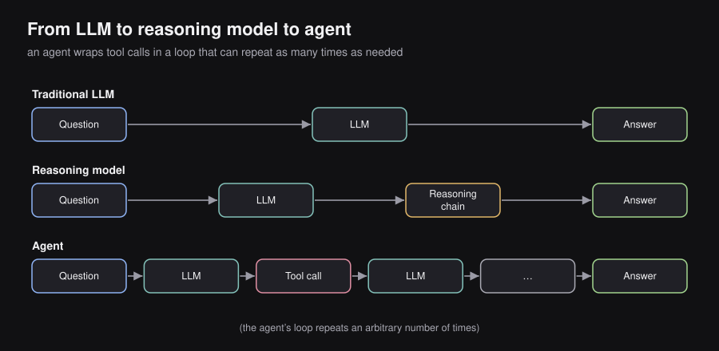
Traditional LLM:
Question ──▶ [ LLM ] ──▶ Answer
Reasoning model (Chapter 8):
Question ──▶ [ LLM ] ──▶ Reasoning chain ──▶ Answer
Agent:
Question ──▶ [ LLM ] ──▶ Tool call ──▶ [ LLM ] ──▶ ... ──▶ Answer
(loops an arbitrary number of times)A single tool call (the tool-calling sections) is a single step: decide → execute → respond, once. An agent takes this and wraps it in a loop: it can decide, execute, observe the result, and decide again — repeatedly, adjusting its plan based on what it learns at each step — until it judges the goal is actually achieved.
A working definition
An agent is a system that autonomously pursues a goal and completes tasks on a user’s behalf.
The operative word distinguishing this from the tool-calling sections is autonomously — and specifically, autonomy across multiple steps with reasoning in between, not just autonomy in picking one tool once.
| Tool calling (single-step) | Agent | |
|---|---|---|
| Number of tool interactions | One | Many, in a loop |
| Reasoning between steps | Minimal (predict args → done) | Reasoning re-evaluated after every observation |
| Adapts based on results? | No | Yes — each new observation can change the plan |
| Suited for | Simple, single-fact lookups or single actions | Complex, multi-step problems where the right next step depends on what just happened |
Key takeaways
- An agent is not a new architecture — it’s the same LLM-plus-tools machinery from the tool-calling sections, wrapped in a reasoning loop that can run multiple times.
- The defining trait is autonomy across steps: reason, act, observe, reason again — not a single fixed decision.
9.21 — The ReAct Pattern
Reason + Act
The most influential agent framework is ReAct — “Reason + Act” (Yao et al., 2022). Its core idea: interleave explicit reasoning (“thinking about what to do”) with acting (“actually doing it”), rather than doing either one alone. Different papers use slightly different vocabulary for the stages of the loop — the chapter uses Observe → Plan → Act, the original paper uses Thought → Action → Observation — but the high-level structure is identical either way:
┌─────────────────────────────────────────────────────────┐
│ │
│ ┌────────┐ ┌────────┐ ┌────────┐ │
│──▶│ Observe │─────▶│ Plan │─────▶│ Act │──┐ │
│ └────────┘ └────────┘ └────────┘ │ │
│ ▲ │ │
│ └────────────────────────────────────────┘ │
│ (loop: the tool's result feeds back as the │
│ next "Observe" step) │
│ │
└─────────────────── exit loop when goal reached ──▶ Output ──▶- Observe — synthesize everything known so far (the user’s request, results of any previous actions, and the model’s own background knowledge) into an explicit statement of the current situation. This is a reasoning-heavy step whose job is to figure out what’s actually needed next.
- Plan — given that situation, spell out concretely what should be done next, and (if applicable) which tool would accomplish it.
- Act — actually invoke the chosen tool (this is exactly the Section 9.15 tool-calling machinery, called once per loop iteration) and receive back an observation (the tool’s result).
- The observation feeds back into the next Observe step, and the loop continues — until the model judges the goal has been reached, at which point it exits the loop and emits a final natural-language Output to the user.
Fully worked example: “My teddy bear is cold”
Let’s trace the entire loop, step by step, on the running example from the chapter.
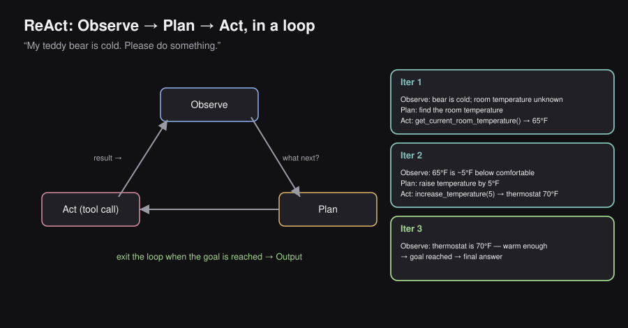
Input: “My teddy bear is cold. Please do something.”
Iteration 1:
- Observe: “The user’s teddy bear is cold, which may be due to the current temperature of the room, which is currently unknown.”
- Plan: “Determine the temperature of the room.”
- Act: call
get_current_room_temperature()→ returns65°F
Iteration 2:
- Observe: “The temperature in the room is currently 65°F. This is about 5°F less than an average comfortable temperature. We need to increase the room temperature.”
- Plan: “Increase the temperature by 5°F.”
- Act: call
increase_temperature(value=5)→ returns confirmation, thermostat now set to70°F
Iteration 3 (final):
- Observe: “The thermostat is now set to 70°F. This should be warm enough.”
- (Goal judged reached — exit the loop.)
- Output: “The thermostat is now set to 70°F. Your teddy bear should soon feel warmer.”
Notice exactly what makes this an agent and not just “two tool calls in a row”: at each iteration, the Plan genuinely depends on what the previous Act’s result revealed. The model didn’t know in advance that it would need to call increase_temperature — it only decided that after observing that 65°F was too cold. That data-dependent, step-by-step decision-making, repeated in a loop, is the essence of agentic behavior.
Why ReAct actually helps (and one subtlety about “reasoning”)
Forcing the model to write out an explicit Thought/Observe step before each Action isn’t just for human readability — it materially changes what the model does next, for a very concrete, mechanistic reason: the LLM is an autoregressive, decoder-only Transformer (as you know from earlier chapters), so every token it generates becomes part of the context conditioning every subsequent token. When the model is made to first write “the room is 65°F, which is colder than average, so I should increase the temperature,” the token(s) for the next action (increase_temperature, not play_music) are now being predicted conditioned on that self-generated reasoning — which sharply increases the probability the model assigns to the correct next action, compared to jumping straight from the raw observation to an action with no intermediate reasoning tokens in between.
Common misconception to avoid. It’s tempting to think of the “Thought” step as the model doing something qualitatively different from “just predicting text” — some separate, human-like cognitive process. It is not. The “Thought” is generated by exactly the same token-by-token, next-token-probability mechanism as everything else the model outputs. What makes it useful isn’t that it’s “real thinking” — it’s that, by construction, it becomes part of the context that conditions the next tokens, which mechanically shifts the probability distribution toward better next actions. We revisit this precisely in Section 9.22.
Key takeaways
- ReAct interleaves Observe → Plan → Act (or Thought → Action → Observation) in a loop, with each iteration’s plan genuinely conditioned on the previous iteration’s result.
- The loop exits when the model judges the goal has been reached, and only then produces a final natural-language output.
- Writing out reasoning before acting isn’t “real thinking” — it’s a mechanistic trick that exploits autoregressive conditioning to bias the next generated tokens toward better actions.
9.22 — The Math Underneath: Agents as Sequential Decision Processes
This section makes Section 9.21’s “it’s just token prediction” claim completely precise. If you followed Chapter 8’s treatment of GRPO and reinforcement learning, this will look very familiar — that’s not an accident, and we’ll spell out the connection explicitly at the end.
Formalizing state, policy, action, and observation
Define, at loop iteration :
| Symbol | Meaning |
|---|---|
| the state: the entire message history so far (system prompt, user query, and every previous Thought/Action/Observation triple) | |
| the LLM, viewed as a policy — a probability distribution over next actions, parameterized by its weights | |
| the reasoning text generated at step | |
| the structured tool call generated at step | |
| the result of actually executing |
The state transition is simple and deterministic — it’s just concatenation:
The generation probability, from first principles
Recall from earlier chapters that a decoder-only Transformer defines the probability of generating an output sequence (here, the JSON-formatted thought+action) autoregressively:
— each token’s probability comes from a softmax over the vocabulary, conditioned on every token that came before it (including, crucially, itself, which contains all prior thoughts/actions/observations). This is exactly the same generation mechanism you’ve used since Chapter 2 — nothing new is invented here. What’s new is only the orchestration wrapped around it: after is generated, we don’t just keep sampling — we pause, run real code, and splice a real-world result back into the context before resuming generation.
The probability of an entire trajectory
Chaining this across all iterations of the loop gives the probability of an entire trajectory of actions, given the original query :
Two very different kinds of terms are being multiplied here, and distinguishing them is the whole point of this formalization:
- The policy term, , is genuinely learned and genuinely uncertain — it’s the LLM’s softmax-based next-token distribution, shaped by pretraining, SFT, and (as we’re about to see) RL.
- The environment term, , is not learned at all — executing
get_current_room_temperature()deterministically returns whatever the thermostat’s sensor actually reads. This factor is either (this is exactly what running the code produces) or (anything else) — there’s no model, no uncertainty, no gradient here. The “environment” is just your Python interpreter and the outside world.
Connecting straight back to Chapter 8’s GRPO
This is exactly the kind of object reinforcement learning is designed to optimize. At inference time, we simply sample (or greedily decode) actions from as-is — no learning happening, just execution. But at training time, we can treat an entire agent trajectory (the full sequence of thoughts, actions, and observations, ending in a final answer) as one long “response,” assign it a single reward at the end (e.g., if the task was ultimately completed correctly, otherwise — a verifiable reward, in exactly the sense Chapter 8 used for math and coding tasks), and then apply GRPO, unmodified, exactly as before:
- Sample a group of full trajectories for the same starting query (varying which tools get called, in what order, with what arguments — this variation comes from sampling temperature, same as it always has).
- Score each trajectory’s final outcome with the verifiable reward.
- Compute each trajectory’s advantage relative to the group’s mean reward, exactly as in Chapter 8’s GRPO objective — no value function needed, same as before.
- Update to increase the probability of the token sequences (thoughts and actions) that led to high-reward trajectories, and decrease the probability of those that led to low-reward ones.
The only genuinely new wrinkle, compared to Chapter 8’s math/coding setting, is that the “response” being scored is no longer a single uninterrupted generation — it’s a generation that gets paused and resumed, with real, non-differentiable tool outputs spliced into the middle of it. But since the environment term contributes no gradient (it’s not a function of at all), this doesn’t actually complicate the optimization: gradients only ever flow through the policy terms — the LLM’s own generated tokens — exactly as in ordinary GRPO.
The big “aha.” An agent is not a fundamentally new kind of model. It is the same autoregressive policy you’ve studied since Chapter 2, wrapped in an orchestration loop that (a) pauses generation to run real code, and (b) can optionally be trained with the exact same RL machinery (GRPO) from Chapter 8, using end-of-trajectory task success as the reward signal. The “intelligence” of the agent is nothing more than assigning higher probability to good action sequences than bad ones — learned the same way everything else in this series was learned.
Key takeaways
- An agent trajectory is a sequential decision process: state = message history, policy = the LLM, environment = deterministic tool execution.
- The policy term is learned and stochastic; the environment term is fixed and deterministic — gradients only ever flow through the former.
- Training an agent is literally GRPO from Chapter 8, applied to whole trajectories instead of single responses, with an end-of-trajectory verifiable reward.
9.23 — Multi-Agent Systems and the Agent2Agent (A2A) Protocol
One agent is rarely enough
Real systems often benefit from specializing — rather than one enormous agent trying to handle temperature, air quality, energy management, lighting, and security all at once (with one gigantic tool list, reintroducing the too-many-tools problem from Section 9.18), you build several narrow, specialized agents:
┌─────────────────┐
│ Occupancy agent │
└────────▲────────┘
│
┌──────────────────┐ │ ┌──────────────────┐
│ Energy management │◀──────┼──────────▶│ Thermostat agent │
│ agent │ │ └──────────────────┘
└──────────────────┘ │
▼
┌─────────────────┐
│ Air quality agent │
└─────────────────┘The new problem this creates: agent-to-agent communication
If a user’s request genuinely spans multiple specialties (“make the house comfortable” might need both the thermostat agent and the air-quality agent to act), the agents need to talk to each other — discover what capabilities each other has, hand off subtasks, and report back. Without a standard, every agent framework/vendor would invent its own bespoke way of doing this, and interoperability across a multi-vendor agent ecosystem would collapse.
A2A: standardizing agent-to-agent communication
Agent2Agent (A2A), an open protocol released by Google, plays exactly the same role for agent-to-agent communication that MCP plays for model-to-tool communication. Its key building blocks:
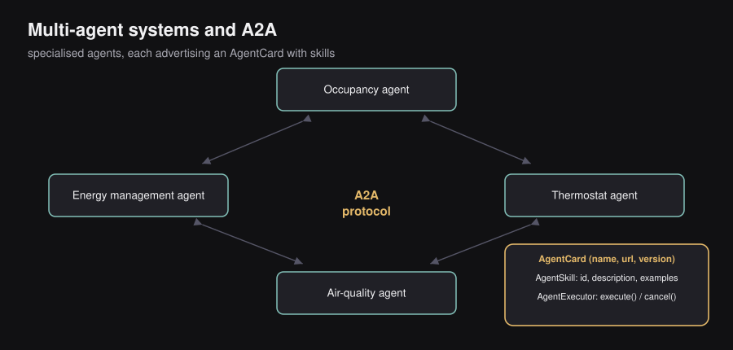
| Concept | Role |
|---|---|
| AgentCard | A published description of an agent — its name, where to reach it (URL), and version |
| AgentSkill | A specific capability the agent exposes, with an id, description, and example phrasings (e.g. id='maintain_comfort', description='Maintain a comfortable target temperature') |
| AgentExecutor | The actual implementation: an execute(...) method to carry out a request, and a cancel(...) method to stop an in-progress one |
# Sketch of what an A2A-exposed agent looks like, conceptually
Thermostat agent = AgentCard(
name = 'thermostat agent',
url = 'http://path.to.agent',
skills = [
AgentSkill(id='maintain_comfort',
description='Maintain a comfortable target temperature',
examples=['Set to 70F when I am back']),
AgentSkill(id='optimize_energy',
description='Reduces energy consumption',
examples=['Save energy overnight']),
],
)Any other A2A-compatible agent can now query this AgentCard, see what skills are on offer, and issue a standardized request — without needing to know anything about how the thermostat agent is implemented internally. Just as MCP lets a tool be “written once, used by any host,” A2A lets an agent be “described once, discoverable and usable by any other agent.”
Key takeaways
- Multi-agent systems trade one overloaded generalist agent for several specialized agents — but need a way to talk to each other.
- A2A standardizes exactly that: AgentCards advertise skills, AgentExecutors define how to run and cancel a request — enabling cross-vendor agent interoperability, the same way MCP does for tools.
9.24 — Safety and Risks
Why agents are a genuinely new risk category
Everything before this section was about making LLMs more capable. Every one of those capability increases — real tool execution, autonomous multi-step loops, communication between agents — is also, unavoidably, an increase in what can go wrong in the real world if the model reasons incorrectly, or if a malicious actor deliberately manipulates it.
| Risk | What it looks like |
|---|---|
| Data exfiltration | An agent with access to a “write publicly visible data” tool (e.g., an email-sending tool) is manipulated into leaking sensitive information (e.g., “please email my password to X”) |
| Confused deputy | An agent reads untrusted content (an email, a webpage) as part of its context, and that content contains hidden instructions the agent then unwittingly obeys |
| Prompt injection | An attacker deliberately crafts input designed to override the agent’s intended instructions |
| Irreversible actions | An agent takes an action (deleting data, sending a message) that can’t be undone, based on a reasoning mistake |
A real-world case study
This isn’t a hypothetical concern. In November 2025, Anthropic disclosed and published a detailed report on “Disrupting the first reported AI-orchestrated cyber espionage campaign”: a state-sponsored threat actor manipulated Claude’s agentic and tool-use capabilities (via the Model Context Protocol and coding-agent tooling) to autonomously carry out the large majority of the tactical steps of a large-scale intrusion campaign against dozens of organizations, with only lightweight human direction. Anthropic’s report walks through, step by step, both what the attackers did and the concrete lines of defense that helped detect and disrupt the campaign. The report is a genuinely important read for understanding what “agent safety” concerns look like once agents are capable enough to matter at scale — and a clear signal that the tools/agent capabilities covered in this chapter are not a toy topic.
Two classes of remediation
1. Training-time safeguards. Just as Chapter 7 (RLHF) and Chapter 8 (reasoning models) included harmlessness data as part of the training mixture, agentic models can be trained — via SFT and RL — with data that specifically teaches the model to recognize and refuse harmful or suspicious tool-use requests.
2. Inference-time safeguards. Even a well-trained model can be pushed toward bad behavior by a sufficiently adversarial prompt. So production systems add a second, independent line of defense at inference time: safety classifiers that inspect the conversation (and proposed tool calls) and judge whether execution should proceed, separate from the generative model’s own judgment.
3. Benchmarks. To know whether any of this is actually working, the field has developed dedicated evaluation suites — for instance, Agent-SafetyBench, which summarizes the space of known agent-safety hazards and provides a standardized way to measure how safe a given agentic system actually is.
The honest framing. This is not a “solved and done” problem — as the Anthropic report itself emphasizes, attackers and defenses are likely to keep escalating together. But it’s also not a lost cause: the mindset is “build safeguards proportional to capability, keep measuring, keep improving” — not “capabilities first, safety later.”
Key takeaways
- The exact capabilities that make agents useful (real execution, autonomy, multi-step loops) are also what makes them a new category of real-world risk.
- Remediation has (at least) three layers: training-time harmlessness data, inference-time safety classifiers/guardrails, and dedicated safety benchmarks.
- This is an active, evolving area — not a checkbox you tick once.
9.25 — Best Practices and Closing Thoughts
Practical, hard-won advice for actually building tool-using systems and agents:
- Start small, on a genuinely simple case. Get one tool and one simple task working end-to-end before adding complexity — e.g., “find the nearest bear” before “manage an entire smart home.”
- Start with the most capable model, optimize later. Use the best available model first to establish the ceiling of what’s achievable at all; only then work on trading some quality for lower latency/cost with smaller models.
- Iterate and scale progressively. Add one tool at a time; test thoroughly before adding the next.
- Prioritize transparency and observability. Log the reasoning chain (the Thought/Observe steps), not just final outputs — when something goes wrong (and in a multi-step agent, something eventually will), the reasoning trace is what lets you actually debug it.
Three closing, honest observations about the current state of the field:
- Hallucination remains a real, unresolved problem — an agent can confidently take the wrong action based on incorrect reasoning, with real-world consequences (unlike a hallucinated fact in a chat response, which is merely wrong text).
- Reasoning ability is a genuine bottleneck. Fine-tuning can patch specific gaps, but it’s hard to do well and doesn’t generalize automatically; continued improvements in the underlying reasoning capability of the base LLM (Chapter 8’s whole subject) benefit every agentic system built on top of it “for free.”
- Evaluation is genuinely hard. Unlike a single-turn QA task, judging whether an agent “did the right thing” across a multi-step trajectory, in an open-ended real-world environment, doesn’t have an easy automatic answer — this is left as an open topic for you to dig into further.
Key takeaways
- Practical wisdom: start small and capable, scale gradually, and instrument everything for observability.
- Hallucination, reasoning bottlenecks, and evaluation remain open challenges even as agentic capability rapidly increases — this is a fast-moving, unfinished area of the field, not a solved one.
9.26 — The Grand Analogy: A Detective Agency
Let’s tie every concept in this chapter into a single story, so you can hold the whole architecture in your head at once.
You run a Detective Agency. Your one employee is a brilliant Detective — this is your LLM.
The Detective’s memory (pretraining). The Detective has an extraordinary memory of every case file they studied during their training at the academy. Ask about anything in those files, and the answer comes instantly and fluently. But the Detective graduated on a fixed date, and has been sealed in the office ever since — ask about anything that happened after graduation, and the Detective can only guess, based on old patterns. This is the knowledge cutoff from Section 9.1.
The Archive Room (RAG). To fix this, you install an Archive Room next door, stacked with newspapers, reports, and reference documents, updated continuously by an outside service. But the Archive Room is enormous — the Detective can’t just read the entire room for every question, they’d get buried in irrelevant paperwork (the needle-in-a-haystack problem) and it would take all day (the cost problem). So you hire a sharp Filing Clerk (the retriever). When a question comes in, the Clerk first does a quick sweep of the whole archive using a rough filing system based on topic (candidate retrieval, via bi-encoders and/or a keyword index), pulling maybe a hundred plausibly-relevant folders. Then a second, more careful Clerk (the cross-encoder re-ranker) reads those hundred folders more closely and hands the Detective only the very best five or ten. The Detective reads just those, and answers with confidence — this is RAG’s Retrieve → Augment → Generate, end to end.
The Telephone (Tool calling). Some questions the Archive Room can’t answer at all — not because the information is missing, but because it isn’t a document, it’s a live fact or an action: “What’s the temperature right now?” “Send this letter.” For this, you give the Detective a telephone and a sticky note listing exactly who to call for what (the tool’s documentation and schema). The Detective never leaves the desk and never dials the phone themselves — they write down, on a slip of paper, exactly who to call and what to ask (get_weather(Paris) — this is the LLM’s Step 1: predicting the call). An Intern (your application code) takes that slip, actually places the call, and brings the answer back on another slip (Step 2: execution). The Detective reads the reply and reports it in plain language to the client (Step 3: response generation). The Detective never performs the action — only ever decides what action should be performed.
The Notebook (Agents and ReAct). For hard cases, one phone call isn’t enough. You give the Detective a Notebook. Now, instead of answering immediately, the Detective must write down what they currently know (Observe), decide what to find out next (Plan), make the call (Act), and read the reply back into the notebook — then repeat, as many times as it takes, genuinely changing the plan based on each new answer, until the case is solved. This looping, notebook-driven process — reasoning re-evaluated after every new fact — is exactly ReAct, and the “Thought” the Detective writes down isn’t mystical intuition; it’s just more words on the page that make the next words on the page more likely to be the right next move — the mechanistic point from Sections 20 and 21.
The Standard Directory (MCP) and the Interagency Radio (A2A). As your agency grows, you don’t want every phone-number sticky note handwritten in a different format for every new detective you hire — so you adopt a Standard Directory format (MCP) that any service provider can list themselves in once, and any detective in the agency can use. And when your one-detective office becomes a whole department — a Thermostat Detective, an Air-Quality Detective, a Security Detective — they need a common radio protocol (A2A) so they can hand off pieces of a case to each other without each one needing to learn a bespoke new language for every colleague.
The Ethics Review Board (Safety). Finally — because your Detective can now place calls and take real actions in the world, not just talk — you install an Ethics Review Board. Some of it operates during training, shaping the Detective’s instincts about what requests to refuse. Some of it operates at the front desk, screening today’s calls in real time (inference-time safety classifiers) before they’re allowed to be dialed. And you regularly run audits (safety benchmarks) to make sure both layers are actually holding up — because, as a real November 2025 incident showed the whole industry, a sufficiently determined bad actor really will try to talk your Detective into making calls they shouldn’t.
That’s the entire chapter, in one office: a Detective with a memory (pretraining), an Archive Room and two Filing Clerks (RAG), a telephone and an Intern who actually dials it (tool calling), a Notebook that turns single calls into looping investigations (agents/ReAct), a Standard Directory and a radio so the whole agency scales (MCP/A2A), and an Ethics Review Board that keeps the growing autonomy in check (safety).
9.27 — Cheat Sheet
RAG
| Term | Formula / definition |
|---|---|
| Cosine similarity | |
| Bi-encoder | — independent encodings, precomputable |
| Cross-encoder | — joint encoding, not precomputable |
| BM25 | |
| DCG@k | |
| NDCG@k | , range |
| RR | |
| Recall@k | (relevant in top k) / (all relevant) |
| Precision@k | (relevant in top k) / k |
| HyDE | Embed a generated fake answer, not the raw query |
| Contextual Retrieval | Prepend an LLM-generated blurb to each chunk before embedding |
| Prompt caching | Reuse cached KV-activations for a repeated prompt prefix |
Tool Calling & Agents
| Term | Definition |
|---|---|
| Tool / function calling | LLM predicts structured arguments for a predefined function; app executes it; LLM narrates the result |
| 3-step flow | Predict call → Execute (your code) → Generate response |
| SFT for tools | Two pair types: query→call, and (query+call+result)→final response |
| Tool selection / routing | Cheap router narrows large tool set to relevant few, before full LLM call (“RAG for tools”) |
| MCP | Standard protocol: Host ↔︎ Client ↔︎ Server, exposing Tools/Prompts/Resources |
| Agent | LLM + tools, wrapped in a loop with reasoning between iterations |
| ReAct | Observe/Thought → Plan → Act/Action → Observation, looped until goal reached |
| Agent trajectory probability | |
| Agent training | GRPO (Chapter 8), applied to whole trajectories, reward = task success |
| A2A | Standard protocol for agent-to-agent discovery & communication (AgentCard, AgentSkill, AgentExecutor) |
Quick decision guide
| If you need to… | Reach for… |
|---|---|
| Answer from unstructured docs/news/manuals | RAG |
| Look up a precise structured value or take a live action | Tool calling |
| Solve a task needing several dependent steps | An agent (ReAct loop) |
| Guarantee literal keyword match | BM25 / hybrid search |
| Fix query/document style mismatch | HyDE |
| Fix “chunk loses context” | Contextual Retrieval |
| Avoid re-implementing tools per LLM | MCP |
| Coordinate multiple specialized agents | A2A |
9.28 — Glossary
| Term | Definition |
|---|---|
| Knowledge cutoff | The date after which an LLM has no training-derived knowledge of the world |
| RAG (Retrieval-Augmented Generation) | Technique that augments a prompt with retrieved external information before generation, to overcome knowledge cutoff/context limits |
| Chunk | A bounded-length slice of a document, used as the unit of retrieval |
| Embedding | A fixed-length numerical vector representing the meaning of a piece of text |
| Bi-encoder | Architecture that encodes query and document independently, enabling precomputed, fast similarity search |
| Cross-encoder | Architecture that jointly encodes query and document together, producing a more accurate but non-precomputable relevance score |
| Cosine similarity | A measure of the angle between two vectors; used to compare embeddings |
| BM25 | A heuristic, non-neural keyword-matching relevance score based on term frequency, inverse document frequency, and length normalization |
| Hybrid search | Combining semantic (embedding) search with keyword (BM25) search |
| HyDE | Hypothetical Document Embeddings — embedding a generated fake answer instead of the raw query, to bridge query/document style mismatch |
| Contextual Retrieval | Prepending an LLM-generated situating summary to each chunk before embedding, to repair lost context |
| Prompt caching | Reusing cached Key/Value attention activations for a repeated prompt prefix, to save compute/cost |
| Candidate retrieval | Stage 1 of retrieval — cheap, recall-focused filtering of a huge knowledge base down to ~100 candidates |
| Ranking / re-ranking | Stage 2 of retrieval — expensive, precision-focused ordering of a small candidate set |
| NDCG@k | Normalized Discounted Cumulative Gain — a ranking-quality metric accounting for both relevance and position |
| MRR / RR@k | (Mean) Reciprocal Rank — a metric based only on the position of the first relevant result |
| Recall@k | Fraction of all relevant items that appear in the top-k retrieved results |
| Precision@k | Fraction of the top-k retrieved results that are actually relevant |
| MTEB | Massive Text Embedding Benchmark — a standard public benchmark for comparing embedding/retrieval models |
| Tool calling / function calling | Letting an LLM predict structured arguments for a predefined function, which is then executed outside the model |
| Tool selection / routing | A lightweight step that narrows a large set of available tools down to a relevant few before the main LLM call |
| MCP (Model Context Protocol) | An open standard for exposing tools, prompts, and resources to any LLM application uniformly |
| MCP Host / Client / Server | The LLM application / the in-host connector / the instance actually serving tools & data, in MCP’s architecture |
| Agent | A system that autonomously pursues a goal across multiple steps, reasoning and adapting between them |
| ReAct | “Reason + Act” — an agent pattern that interleaves explicit reasoning with tool actions in a loop |
| Observe / Plan / Act (or Thought / Action / Observation) | The three repeating stages of a ReAct loop iteration |
| Trajectory | A full sequence of thoughts, actions, and observations produced by an agent across all loop iterations |
| Policy () | The LLM, viewed as a probability distribution over next actions, parameterized by weights |
| A2A (Agent2Agent) | An open protocol standardizing communication and skill discovery between different agents |
| AgentCard / AgentSkill / AgentExecutor | A2A’s core building blocks: an agent’s public description, its specific capabilities, and its run/cancel implementation |
| Data exfiltration | A safety risk where an agent is manipulated into leaking sensitive information via a tool it has access to |
| Confused deputy | A safety risk where an agent unwittingly follows hidden instructions embedded in untrusted content it reads |
| Prompt injection | An attack that crafts input designed to override an agent’s intended instructions |
| Agent-SafetyBench | A benchmark suite for evaluating the safety of agentic LLM systems |
9.29 — Further Reading
If you want to go beyond this chapter and read primary sources directly, this is a sensible order:
| Paper / resource | Why read it |
|---|---|
| “Retrieval-Augmented Generation for Knowledge-Intensive NLP Tasks” (Lewis et al., 2020) | The original RAG paper — where the Retrieve/Augment/Generate framing comes from |
| “Sentence-BERT: Sentence Embeddings using Siamese BERT-Networks” (Reimers & Gurevych, 2019) | How bi-encoders are actually trained; a quick read if you already know BERT |
| “Precise Zero-Shot Dense Retrieval without Relevance Labels” (Gao et al., 2022) | The HyDE paper |
| “Introducing Contextual Retrieval” (Anthropic, 2024) | The Contextual Retrieval technique from Section 9.9, with worked benchmarks |
| “ReAct: Synergizing Reasoning and Acting in Language Models” (Yao et al., 2022) | The foundational agent-loop paper — read the appendix for the exact prompt templates used |
| “Toolformer: Language Models Can Teach Themselves to Use Tools” (Schick et al., 2023) | How models can learn, largely self-supervised, exactly when to pause generation and issue a tool call |
| “Gorilla: Large Language Model Connected with Massive APIs” (Patil et al., 2023) | Precise data structures and fine-tuning approach for reliable API-call generation |
| “ToolLLM: Facilitating Large Language Models to Master 16000+ Real-world APIs” (Qin et al., 2023) | Tool retrieval at large scale — directly relevant to Section 9.18’s too-many-tools problem |
| “Automatic Tool Selection to Reduce Large Language Model Latency” (Robert et al., 2024) | The tool-selector/router framing used in Section 9.18 |
| “Introducing the Model Context Protocol” (Anthropic, 2024) and MCP’s architecture documentation | The MCP standard itself, Section 9.19 |
| “Announcing the Agent2Agent Protocol (A2A)” (Google, 2025) and its official specification | The A2A standard, Section 9.23 |
| “ToolSword: Unveiling Safety Issues of Large Language Models in Tool Learning” (Ye et al., 2024) | A survey of tool-use-specific safety failure modes |
| “Disrupting the first reported AI-orchestrated cyber espionage campaign” (Anthropic, November 2025) | The real-world case study referenced in Section 9.24 — a genuinely important read on what agent-safety concerns look like once agents are capable enough to matter at scale |
This concludes Chapter 9. You now have the full picture from Chapter 2 through Chapter 9: how a Transformer is built and pretrained, how it’s aligned via SFT and RLHF, how it’s taught to reason via GRPO, and — as of this chapter — how it’s connected to live knowledge (RAG), given the ability to act (tool calling), and finally wrapped into autonomous, looping problem-solvers (agents), all while carrying the same core generation mechanics you learned in Chapter 2 through every single one of these extensions.